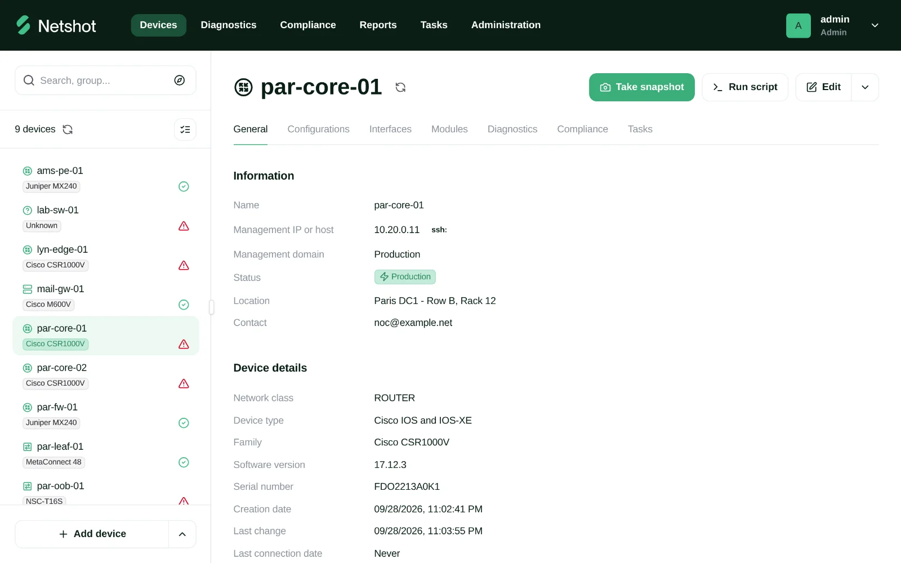
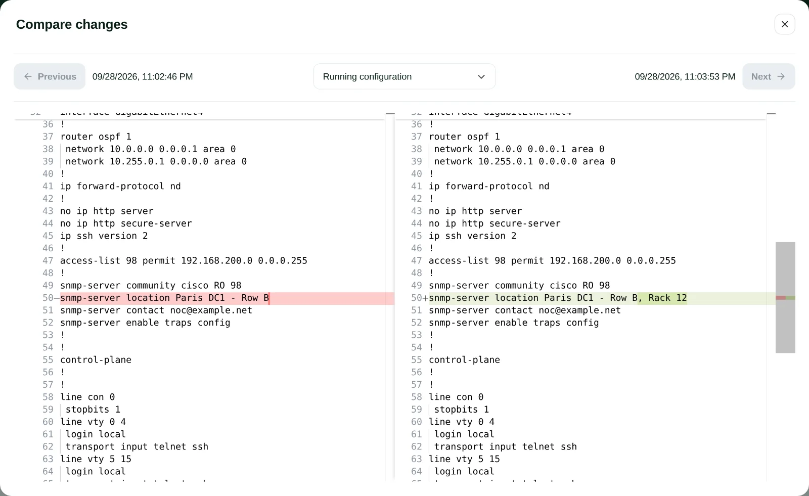
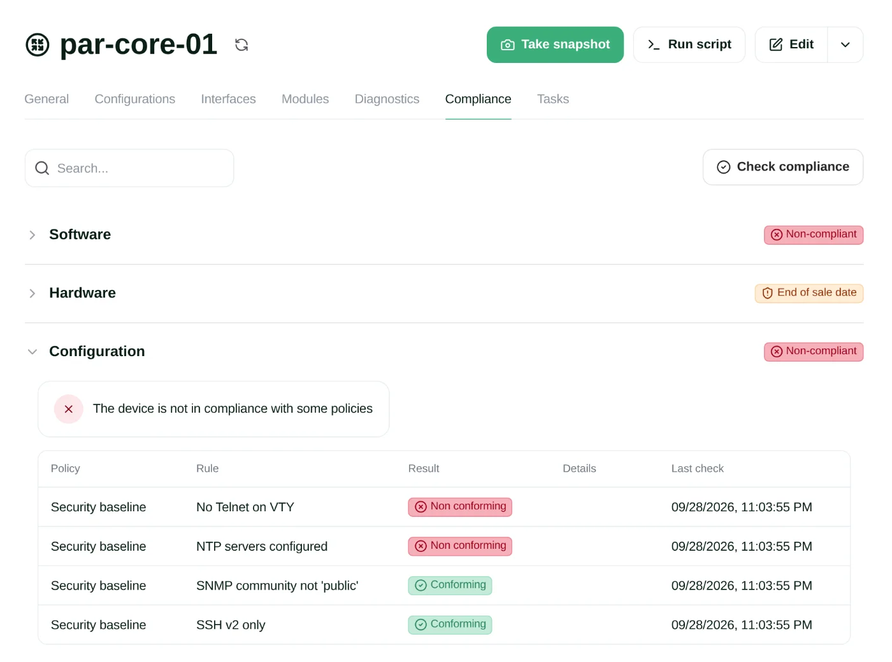
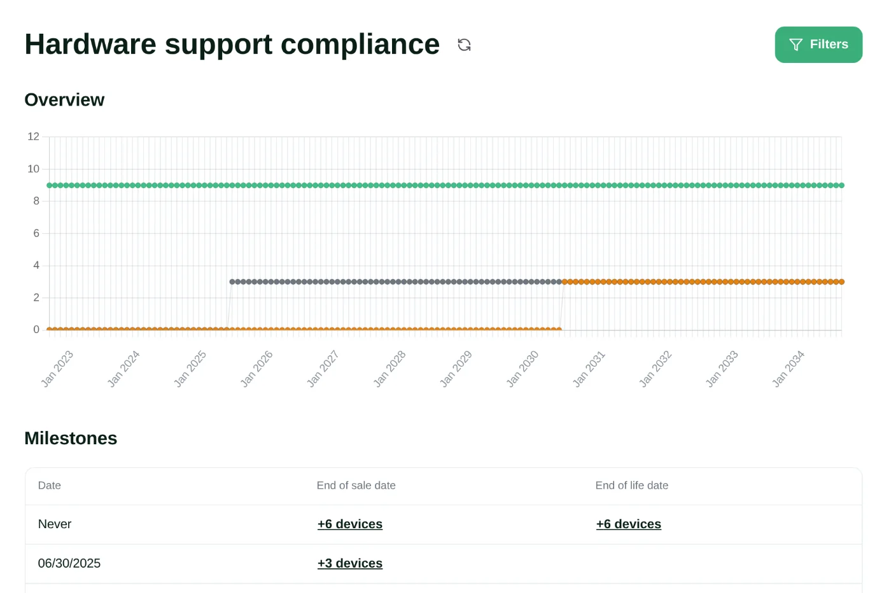

Free & open source · GPL-3.0 · Self-hosted
Configuration and compliance management for network devices
Netshot backs up your device configurations, keeps an inventory of your network, and continuously checks your devices against software, hardware and configuration policies. Open source, self-hosted, and free for networks of any size.

Features
Everything you need to know about your network
Netshot connects to your devices over SSH, Telnet, SNMP or HTTP(S), snapshots them on a schedule or on configuration change, and turns what it collects into an inventory, a history and compliance reports.
-
Configuration backup & history
Automatic snapshots of running configurations, with full history and side-by-side diffs between any two versions.
-
Network inventory
Up-to-date inventory of devices, modules, interfaces, serial numbers, and the IP and MAC addresses in use across your network.
-
Software compliance
Rank software versions per platform (Gold, Silver, Bronze) and instantly spot devices running unapproved releases.
-
Hardware support status
Track end-of-sale and end-of-life milestones so hardware renewals never come as a surprise.
-
Configuration compliance
Check configurations against best-practice or custom policies, with text-based rules or JavaScript and Python scripts.
-
Diagnostics & change automation
Run scripted diagnostics to collect operational data, and push scripted changes to one device or a whole group.
-
REST API & webhooks
Everything in the web UI is available through the REST API. Webhooks notify your other tools when things happen.
-
Flexible authentication
Local accounts, RADIUS, TACACS+, or Single Sign-On through any OIDC identity provider, with role-based permissions.
-
Clustering & high availability
Run several Netshot nodes to spread the load and keep the service up, from a single site to large networks.
Configuration history
See exactly what changed, and when
Every snapshot is kept. Pick any two versions of a device's configuration and Netshot shows you the differences line by line, so you can trace changes, review work, or find what broke.
- Scheduled and change-triggered snapshots (syslog and SNMP traps)
- Running configuration plus driver-specific attributes
- Configuration change reports across the whole network

Compliance
Know which devices don't follow the rules
Group devices statically or with dynamic queries, attach policies to groups, and let Netshot check every new snapshot. Software, hardware and configuration compliance are summarized for each device.
- Text rules with regular expressions and context blocks
- JavaScript and Python rules for complex logic
- Per-rule exemptions and exportable reports

Lifecycle
Plan hardware renewals ahead of time
Define end-of-sale and end-of-life dates per platform or part number, and see how many devices reach each milestone over the coming years.
- Timeline of devices reaching end of sale and end of life
- Rules matched on family or part number, with regular expressions
- Data export for your asset management

Supported devices
Works with the network you already have
Netshot ships with over 40 drivers for widely deployed network, security and infrastructure platforms. Here are some of them.
-
Cisco
IOS & IOS-XE · NX-OS · IOS-XR · ASA · Catalyst SD-WAN · Firepower MC · AireOS
-
Juniper
Junos · ScreenOS
-
Arista
EOS
-
Fortinet
FortiOS · FortiManager · FortiMail
-
Palo Alto Networks
PAN-OS
-
F5
BIG-IP TM-OS
-
Check Point
Gaia
-
HPE Aruba
AOS-CX · ArubaOS-Switch · Comware
-
Huawei
NE series routers
-
Nokia (Alcatel-Lucent)
TiMOS
-
Citrix
NetScaler · NetScaler SDX
-
Any SNMP device
Generic SNMP driver for basic inventory
Missing a platform? Write a driver.
A Netshot driver is a single JavaScript file that tells Netshot how to talk to a device and what to collect. You can add or override drivers without rebuilding anything.
Get started
Up and running in two commands
The quickest way to try Netshot is Docker Compose: it starts Netshot, its PostgreSQL database and a reverse proxy in one go.
Then open https://<your-server>/ and log in with admin / netshot.
Change that password straight away.
Full documentation, including the user guide, configuration reference and REST API, is at docs.netshot.net.
wget https://raw.githubusercontent.com/netshot-net/Netshot/master/dist/compose.yaml
docker compose up -dOpen source
Free. Open source. No strings attached.
Netshot is released under the GPL-3.0 license and runs on your own infrastructure. There's no enterprise edition, no device limit, and no feature kept behind a paywall. You get the whole product.
Netshot stays fully open source and self-hosted.
Paid services buy support, not features.
- Source code on GitHub, contributions welcome
- Your data stays on your servers
- Every feature in every install
Professional services
Need help running Netshot at scale, or a feature that matters to your team? The people behind Netshot can help.
- Support contracts Direct access to the Netshot team when you need it.
- Installation & onboarding Deployment, upgrades and migration assistance.
- Custom driver development Support for platforms that aren't covered yet, or tuning existing drivers.
- Custom features & integrations Sponsored development and integration with your other tools.